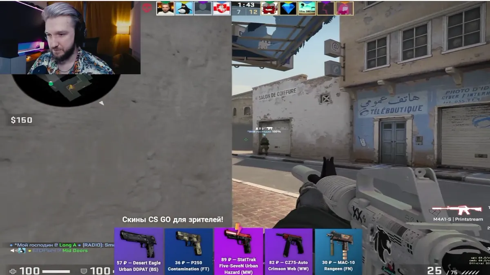

Wargaming · World of Tanks · придумал, защитил, получил бюджет, вёл сам
Построил активацию на игровой экономике
У скина CS воспринимаемая ценность в разы выше себестоимости. Игрок проходит порог активности ради предмета, который стоит нам доллар-два. Затем погружается в задания и комьюнити и с большей вероятностью остаётся в продукте.
в 3 разаниже стоимость нового игрока по когорте
$15 → ~$7было: столько стоил один первый бой. стало: столько стоит игрок с 50 часами в игре
~400игроков за 3 месяца пилота
Награда привязана к порогу удержания
СТУПЕНЬ 01
Первый бойскин $1–2Вход в продуктСТУПЕНЬ 02
10 боёвскин $2Проход точки оттока, участие в челленджахСТУПЕНЬ 03
50 часовскин $3,5Сформированная привычка, игры в пати, участие в комьюнити- Система баллов за внутриигровую активность и турниры — наибольший урон за неделю и другие задания.
- Магазин, где игрок сам выбирал награду и обменивал баллы на скины для CS. Валюта чужой игры как мотиватор внутри своей.
- Скины закупал на площадках, экономику считал под целевую стоимость игрока.
- Собрал Discord-комьюнити: игроки общались и играли вместе — это удержало когорту после окончания механики.
- Сам вёл стримы, данные сверял с командой аналитики.
- Пилот остановлен в 2022 в связи с релокацией.

Механика живёт внутри игровой экономики: награда выдаётся за пройденный порог в продукте. Такие деньги видно в удержании когорты, и результат читается по её поведению через месяцы.